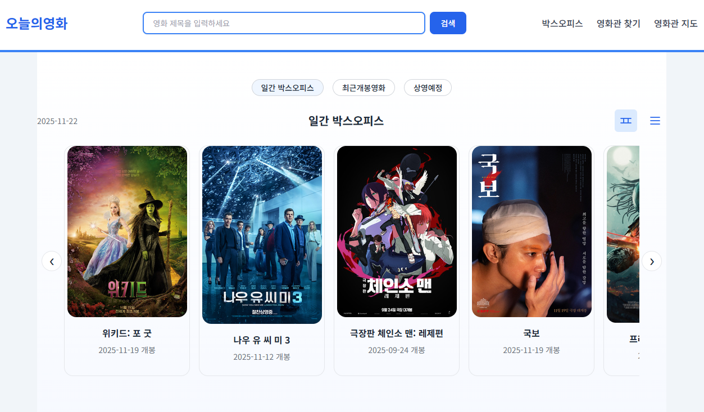
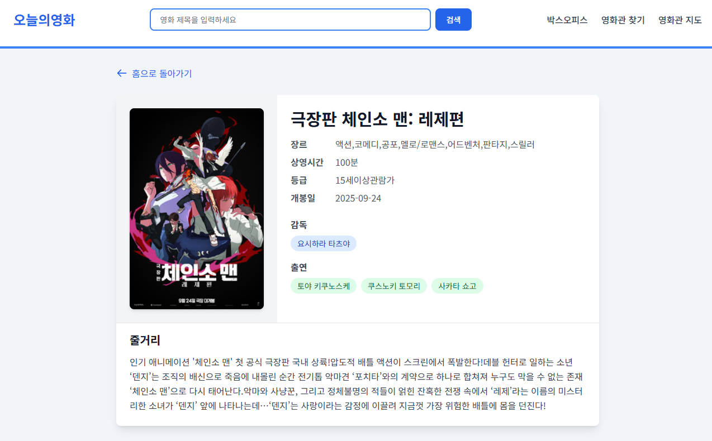

🎬 오늘의 영화 - 영화 정보 통합 제공 서비스
개발 기간: 2025.10 ~ 2025.11 (1개월) |
개발 인원: 1인
배포: Render + PostgreSQL | 핵심 기술: Spring Boot, JPA, REST API, Spring Security
배포: Render + PostgreSQL | 핵심 기술: Spring Boot, JPA, REST API, Spring Security
KOBIS(영화진흥위원회)와 KMDB(한국영화데이터베이스) 두 개의 외부 API를 통합하여 실시간 박스오피스 순위와 영화 상세 정보를 제공하는 웹 서비스입니다. Adapter 패턴으로 외부 API 의존성을 격리하고, N+1 쿼리 최적화를 통해 응답 속도를 개선했습니다.
🖼️ 주요 화면

실시간 박스오피스 & 영화 목록

영화 상세 정보
🛠 기술 스택
Backend
Spring Boot 3.x
Java 21
Spring Data JPA
Lombok
Java 21
Spring Data JPA
Lombok
Database
PostgreSQL
H2 (Dev)
JPA/Hibernate
H2 (Dev)
JPA/Hibernate
Security
Spring Security
환경변수 관리
환경변수 관리
Frontend
Thymeleaf
JavaScript (ES6+)
JavaScript (ES6+)
Tools
Git/GitHub
Gradle
Postman
IntelliJ IDEA
Gradle
Postman
IntelliJ IDEA
Deploy
Render
PostgreSQL
PostgreSQL
🏗️ 시스템 아키텍처

계층별 책임 분리
• Controller: HTTP 요청/응답
• Service: 비즈니스 로직 & 트랜잭션
• Adapter: 외부 API 격리
• Repository: 데이터 접근
핵심 설계 원칙 • Entity-DTO 분리로 계층간 결합도 최소화
• CQRS: 조회/수정 서비스 분리
• 의존성 역전: 외부 API → Adapter
• Service: 비즈니스 로직 & 트랜잭션
• Adapter: 외부 API 격리
• Repository: 데이터 접근
핵심 설계 원칙 • Entity-DTO 분리로 계층간 결합도 최소화
• CQRS: 조회/수정 서비스 분리
• 의존성 역전: 외부 API → Adapter
🔧 핵심 문제 해결 경험
1. 외부 API 데이터 통합 및 매칭 전략 개선
🎯 문제 상황
• KOBIS API: 박스오피스 순위만 제공 (포스터/상세정보 없음)
• KMDB API: 영화 상세 정보 제공
• 두 API의 제목 표기 차이로 매칭 실패 (공백, 특수문자)
• 초기 매칭률 약 90% (재개봉 영화 등 예외 케이스 실패)
• KMDB API: 영화 상세 정보 제공
• 두 API의 제목 표기 차이로 매칭 실패 (공백, 특수문자)
• 초기 매칭률 약 90% (재개봉 영화 등 예외 케이스 실패)
💡 해결 과정
1. Adapter 패턴으로 외부 API 의존성 격리
2. KMDB 데이터 선수집 (703건 저장)
3. 2단계 매칭 전략 도입:
• 1차: 정확 매칭 (title 완전 일치)
• 2차: 공백 제거 후 LIKE 검색
4. 매칭 실패 로깅으로 누락 케이스 발견
• 재개봉 영화 "코렐라인", "가타카" 등 DB 추가
• 매칭 로직 지속 개선
2. KMDB 데이터 선수집 (703건 저장)
3. 2단계 매칭 전략 도입:
• 1차: 정확 매칭 (title 완전 일치)
• 2차: 공백 제거 후 LIKE 검색
4. 매칭 실패 로깅으로 누락 케이스 발견
• 재개봉 영화 "코렐라인", "가타카" 등 DB 추가
• 매칭 로직 지속 개선
✅ 결과: 매칭률 90% → 거의 100% 달성, 재개봉 영화 등 예외 케이스 안정적 처리
2. N+1 쿼리 문제 해결
🎯 문제 상황
• 영화 상세 페이지 로딩 시 출연진마다 개별 쿼리 발생
• 영화 1개 + 출연진 7명 = 8개 쿼리 실행 (N+1 문제)
• Hibernate SQL 로그로 문제 확인
• 영화 1개 + 출연진 7명 = 8개 쿼리 실행 (N+1 문제)
• Hibernate SQL 로그로 문제 확인
💡 해결 과정
1. fetch join으로 MovieEntity → MoviePersonEntity → PersonEntity 한 번에 조회
•
2. DISTINCT로 카르테시안 곱 중복 제거
3. 상황별 Repository 메서드 분리
• findById(): 기본 조회
• findByIdWithPeople(): 출연진 포함 조회
4. @Transactional(readOnly = true)로 조회 최적화
•
LEFT JOIN FETCH m.people mp LEFT JOIN FETCH mp.person2. DISTINCT로 카르테시안 곱 중복 제거
3. 상황별 Repository 메서드 분리
• findById(): 기본 조회
• findByIdWithPeople(): 출연진 포함 조회
4. @Transactional(readOnly = true)로 조회 최적화
✅ 결과: 쿼리 수 8개 → 1개 (87% 감소), DB 왕복 횟수 최소화로 확장성 개선